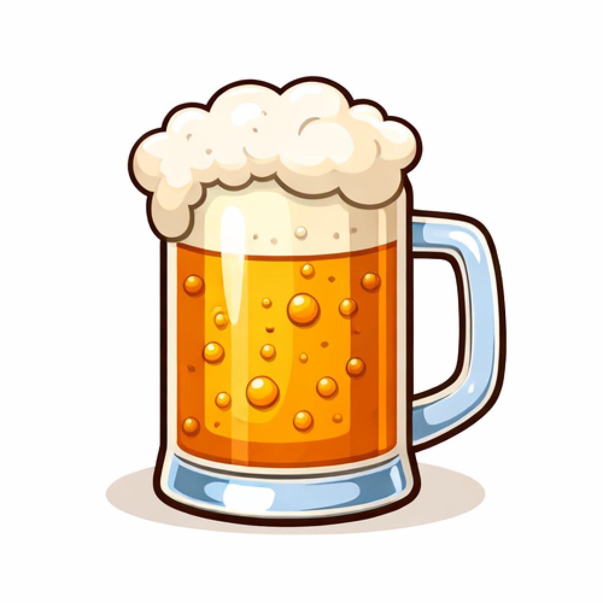
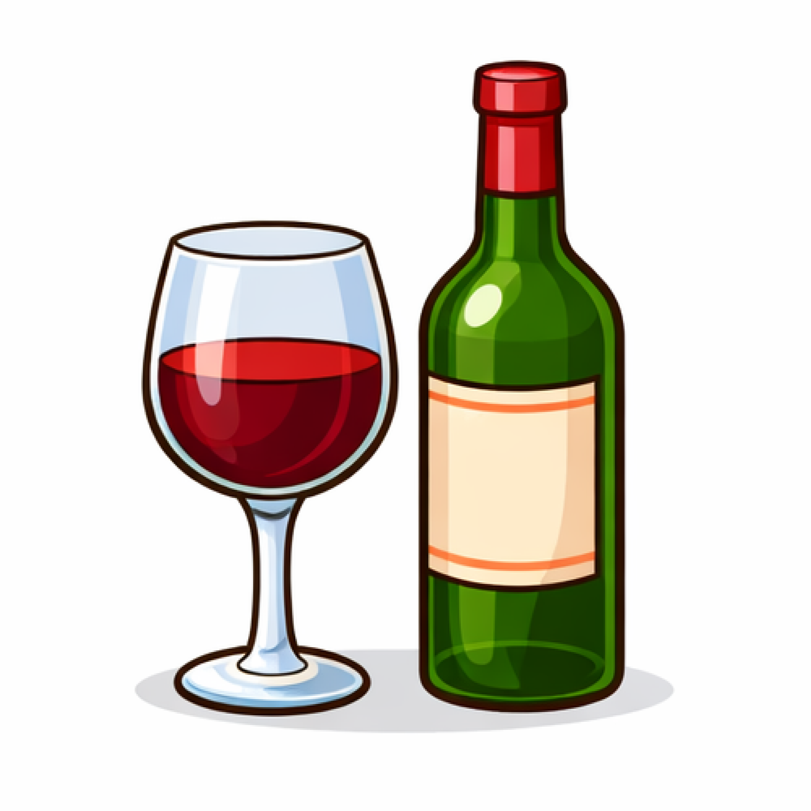
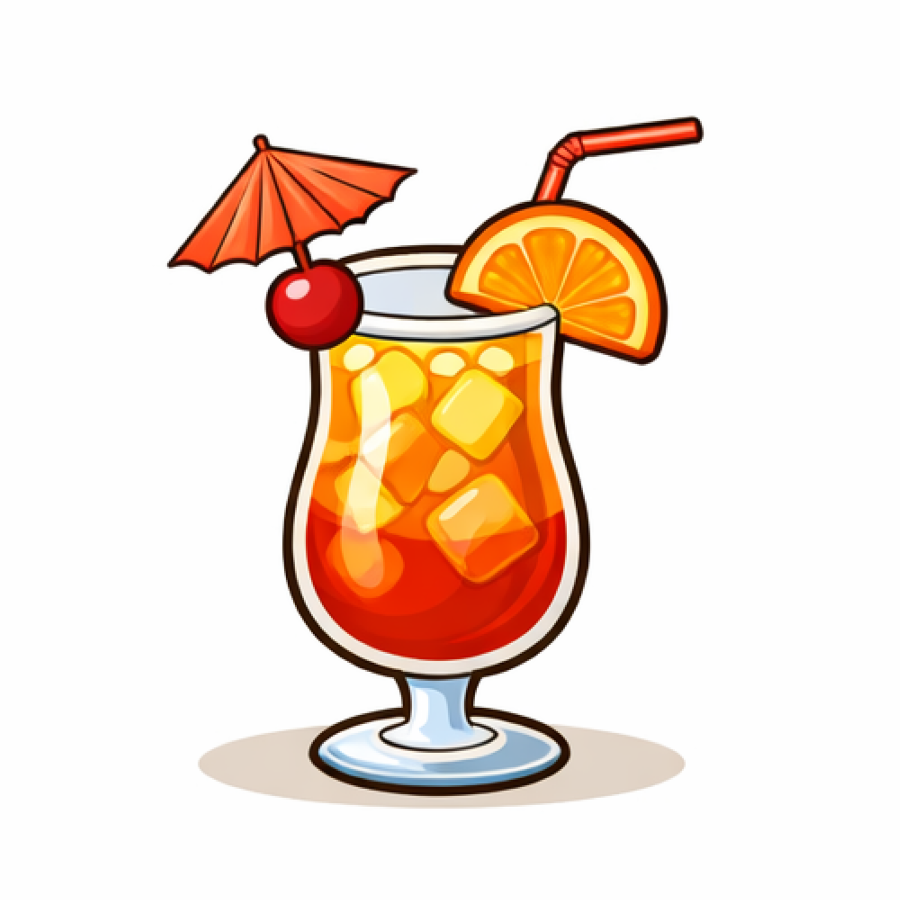
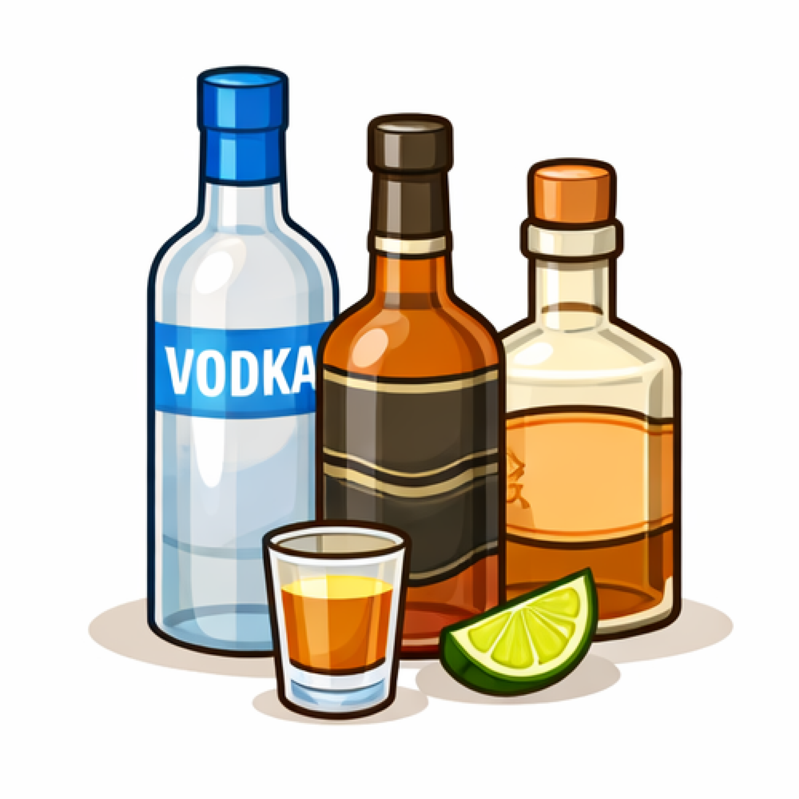
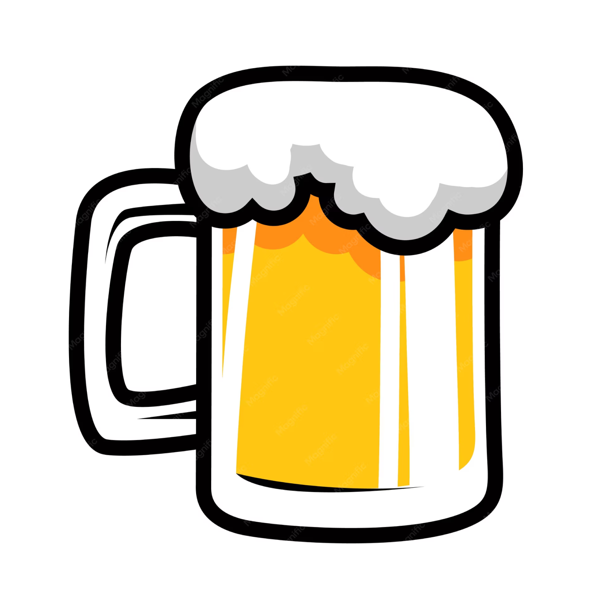
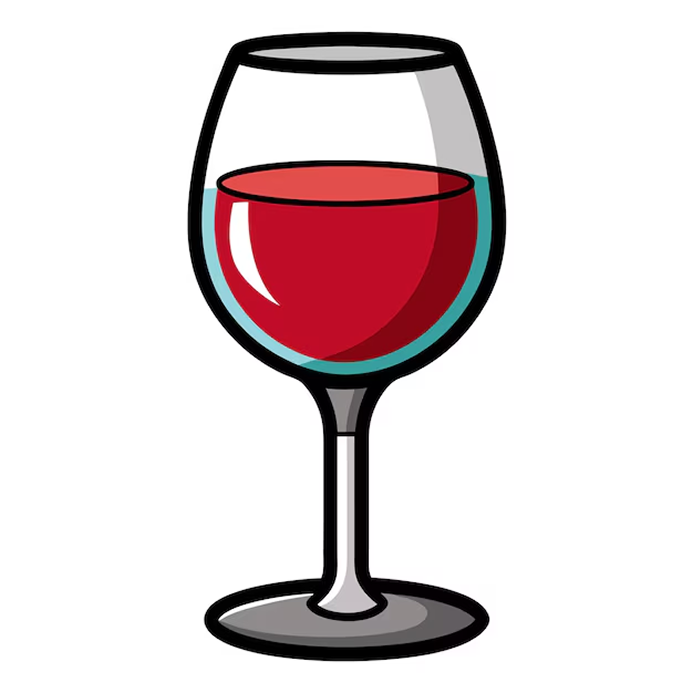
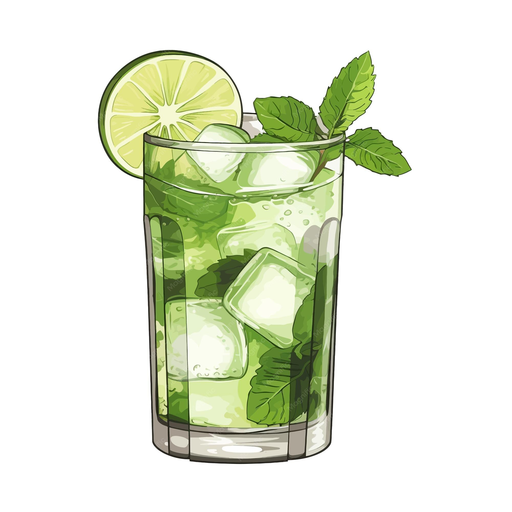
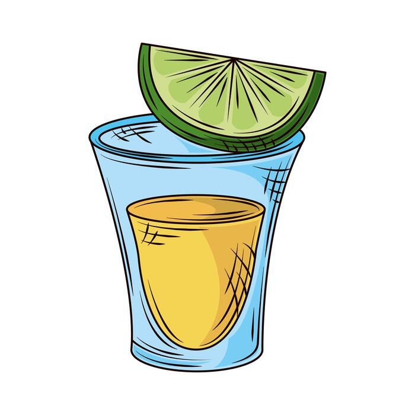

Alcoholic Drinks
Most common Alcoholic Drinks

Beer
Usually 4–6% alcohol
Made from fermented grains (barley, wheat, hops)

Wine
Usually 10–15% alcohol
Made from fermented grapes or other fruits

Cocktails
Alcohol content varies widely
Often combine liquor with juice, soda, or flavorings

Liquor
Usually 35–50% alcohol
Made by fermenting, then distilling to increase alcohol strength
Alcohol Facts
General Facts about Drinking
General Alcohol Use
About 1 in 3 high school students has tried alcohol at least once
Alcohol is the most commonly used substance among teens in the U.S
Risks
Teens who start drinking before age 15 are 4 times more likely to develop alcohol dependence later in life
Effects on the Brain
The brain continues developing until around age 25, making teens more vulnerable to alcohol’s effects
Driving
Even small amounts of alcohol can impair driving
About 1 in 5 teen traffic deaths involve alcohol